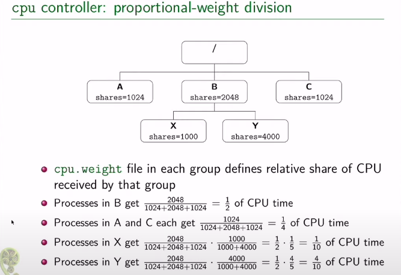

linux命令杂记
Table of Contents
- 1. shell
- 2. git
- 3. grep -i 忽略大小写
- 4. fc-list 显示已安装字体
- 5. docker
- 6. tar fvx XXX
- 7. du -h 以可读形式显示文件大小
- 8. test命令
- 9. bash脚本的编写
- 10. pstree 查看进程树
- 11. strace 追踪程序的系统调用
- 12. objdump -D 显示可执行文件/库文件的反汇编
- 13. ldd 显示链接信息
- 14. code2html 的使用
- 15. wget 保存整个网站
- 16. 配置apt软件源
- 17. 在ArchLinux中安装deb
- 18.
Xterm配置文件 - 19. ssh
- 20. 递归改变文件owner
- 21. 汇编文件(.s)的结构
- 22. makefile
- 23. GDB
- 23.1. 为可执行文件设置环境变量
- 23.2. 为可执行程序传参
- 23.3. 显示某文件源代码
- 23.4. 添加断点
- 23.5. 查看断点
- 23.6. 禁用断点
- 23.7. 重新启用断点
- 23.8. 删除断点
- 23.9. 保存断点到文件
- 23.10. 单步跳过 next
- 23.11. 继续执行, 直至遇到断点
- 23.12. 运行到某处,忽略期间的断点
- 23.13. 进入到函数内部
- 23.14. 从函数中跳出并暂停
- 23.15. 强制从函数中返回特定值
- 23.16. 跳转到指定位置继续执行
- 23.17. 显示当前所有的局部变量
- 23.18. 变量/表达式相关
- 23.19. 栈相关
- 23.20. 调试已经运行的程序
- 23.21. 检查点
- 23.22. 线程
- 23.23. 以指定格式显示某地址处的内容
- 23.24. 反向运行
- 24. CMake
- 25. cgroup v2
1. shell
1.1. 忽略错误继续执行
set +e
恢复默认:
set -e
1.2. 退出 exit n
1.3. 判断文件是否存在
if [ -f $1 ] then else fi
n* git
2. git
2.1. 设置/取消代理
# 设置ss git config --global http.proxy 'socks5://127.0.0.1:1080' git config --global https.proxy 'socks5://127.0.0.1:1080' # 设置代理 git config --global https.proxy http://127.0.0.1:1080 git config --global https.proxy https://127.0.0.1:1080 # 取消代理 git config --global --unset http.proxy git config --global --unset https.proxy
2.2. clone 子模块
git submodule update --init --recursive
此命令经常无速度, 可能需要手动clone, 见 .gitmodules
2.3. 指定需要克隆的branch
git clone -b fsf-gdb-10.1-with-sim<分支> https://github.com/riscv-collab/riscv-binutils-gdb.git riscv-gdb<别名>
3. grep -i 忽略大小写
4. fc-list 显示已安装字体
5. docker
恢复容器的运行 :
sudo docker start `sudo docker ps -a -q` sudo docker attach `sudo docker ps -aq`
6. tar fvx XXX
7. du -h 以可读形式显示文件大小
$ du -h linux-note.org 12K linux-note.org
7.1. 查看目录下的大文件
du -sh .* * | grep G
8. test命令
test `命令` = 'str' test `命令` = 'string' -a `命令` = 'string' test `命令` = "string" -o `命令` = 'string'
E.g
# 判断当前平台是否是linux test `uname -s` = 'Linux' echo $? # 返回零表示无错误发生
9. bash脚本的编写
9.1. set -e 遇到错误就停止
bash脚本默认行为是忽略错误,继续运行. 在脚本开头设置set -e就会使得: 只要有命令返回值!=0整个脚本的运行就会终止
10. pstree 查看进程树
pstree -ap | grep mysql/redis ...
在emacs中的shell运行pstree.
sun@Salted-PC:saltedf.github.io [main] $ pstree -ap | grep emacs
| `-emacs,65 -nw .
| | |-grep,217 --color=auto emacs
| `-{emacs},66
11. strace 追踪程序的系统调用
用于debug和理解程序的流程.
strace -f -s 65535 -i -t -T -p <pid> -o 输出文件
有时候会输出大量信息, 根本无法分析, 若只是需要特定的系统调用,可以使用 -e trace= 进行过滤, 如:负责读取/接收这类的系统调用.
-e trace=recvfrom,read,recv,recvmsg
strace -f -s 65535 -i -t -T -e trace=write,sendto,send -p <PID>
统计各个系统调用总耗时:
strace -c <程序> strace -c -p <PID>
结果显示了各个系统调用所花费总时间以及所占百分比, 调用次数, 以及出错次数. 出错越多一般代码质量越差.
% time seconds usecs/call calls errors syscall ------ ----------- ----------- --------- --------- ---------------- 49.27 0.009506 7 1281 clock_gettime 18.75 0.003617 9 390 rt_sigprocmask 9.05 0.001747 9 175 ioctl 8.12 0.001567 17 92 write 5.40 0.001042 23 45 pselect6 2.48 0.000478 28 17 fcntl 2.38 0.000459 13 35 rt_sigreturn 1.37 0.000265 6 38 read 1.37 0.000264 7 35 timerfd_settime 1.29 0.000249 27 9 poll 0.37 0.000071 35 2 kill 0.16 0.000030 15 2 getpid 0.00 0.000000 0 2 close 0.00 0.000000 0 2 openat ------ ----------- ----------- --------- --------- ---------------- 100.00 0.019295 2125 total
代码分析组合拳: strace看关键调用. ==> 用calltree找出关键系统调用的调用关系. ==>用IDE细看这条调用链
12. objdump -D 显示可执行文件/库文件的反汇编
objdump -D XXX | less
不加less会显示太多!
13. ldd 显示链接信息
$ ldd ./build/udpclient
linux-vdso.so.1 (0x00007ffcb2d85000)
libstdc++.so.6 => /lib/x86_64-linux-gnu/libstdc++.so.6 (0x00007f4c64e2a000)
libgcc_s.so.1 => /lib/x86_64-linux-gnu/libgcc_s.so.1 (0x00007f4c64e0f000)
libc.so.6 => /lib/x86_64-linux-gnu/libc.so.6 (0x00007f4c64c1d000)
libm.so.6 => /lib/x86_64-linux-gnu/libm.so.6 (0x00007f4c64ace000)
/lib64/ld-linux-x86-64.so.2 (0x00007f4c65024000)
14. code2html 的使用
先进入项目根目录:
- 代码转html
src2html.pl --tab-width 4 --color --cross-reference \
--navigator --line-numbers . <项目名>
- html合成pdf
ebook-convert html_out/index.html llvm_release_1.pdf \ --use-profile-size \ --paper-size a3 \ --pdf-default-font-size 13 \ --pdf-mono-font-size 13 \ --margin-left 5 --margin-right 5 \ --margin-top 5 --margin-bottom 5 \ --page-breaks-before='/'
15. wget 保存整个网站
https://github.com/lujun9972/linux-document/blob/master/examples/10%20wget%20command%20examples.org
wget --mirror --convert-links --page-requisites --no-parent -P /path/to/download https://example-domain.com
但这样可能会下载不全，原因可能有很多。这里遇到的问题是默认是不跨域名下载的。
需要运行第二次，并附加上多个选项
wget --mirror --convert-links -r -D "www.seas.upenn.edu,www.cis.upenn.edu" -A.pdf -A.zip -A.shtml --tries=1 --timeout=8 --span-hosts -l 5 --page-requisites --no-parent -P ./ https://www.seas.upenn.edu/\~cis341/17sp/
- -A 指定那些没有被下载的文件类型 （需要观察网站特征获知）
- –span-hosts 跨主机名下载。
- -D 指定域名/主机名 list，否则将遍历大量无用的域名（需要观察网站特征获知）
- –tries=1 重试一次，因为有些域名无法访问，也不含要下载的文件。
- –timeout=10 设定超时时间，防止等待太长时间。
16. 配置apt软件源
sudo vim /etc/apt/source.list sudo apt-get update
17. 在ArchLinux中安装deb
17.1. debtap
17.2. dpkg
yay -Sy dpkg dpkg -i xxx.deb
18. Xterm 配置文件
cat ~/.Xresources
修改后使配置生效:
xrdb ~/.Xresources # or: xrdb -merge ~/.Xresources
最后重启xterm.
! font and locale xterm.locale: true xterm.utf8: true xterm*utf8Title: true xterm*fontMenu*fontdefault*Label: Default ! 斜体在最后添加`:italic` xterm*faceName: Sarasa Mono SC:antialias=true:style=Book xterm*faceSize: 15 xterm*faceNameDoublesize: Sarasa Mono SC ! Noto Sans CJK SC xterm*renderFont: true xterm*xftAntialias: true xterm*cjk_width: true ! 窗口设置 ! 窗口大小及位置 xterm*geometry: 80x25 xterm*dynamicColors: true xterm*saveLines: 2048 xterm*scrollKey: true xterm*scrollTtyOutput: false xterm*scrollBar: true xterm*rightScrollBar: true xterm*jumpScroll: true xterm*multiScroll: true xterm*toolBar: false xterm*Scrollbar*thickness: 10 xterm*Scrollbar*background: black xterm*Scrollbar*foreground: gray90 xterm*background: rgb:1a/1a/1a xterm*foreground: rgb:d6/d6/d6 xterm*cursorColor: rgb:d6/d6/d6 ! 提供xterm-256color类型支持 ! 如果修改后，没有得到正确的结果，说明你可能需要安装ncurses-term包来提供xterm-256color类型支持 xterm*termName: xterm-256color ! 启用 Sixel 图形支持 xterm*decTerminalID: vt340 ! 配置选择文本自动复制到剪贴板 ! https://askubuntu.com/questions/237942/how-does-copy-paste-work-with-xterm xterm*selectToClipboard: true ! 启用“Ctrl+v”来复制 xterm*VT100.Translations: #override \ <Btn1Up>: select-end(CLIPBOARD,PRIMARY,CUT_BUFFER0) \n\ Ctrl <KeyPress> V: insert-selection(CLIPBOARD,PRIMARY,CUT_BUFFER0) ! 解决Alt键不好使 xterm*eightBitInput: false xterm*altSendsEscape: true ! 配置主题 ! -- Tango color scheme xterm*color0: #2e3436 xterm*color1: #cc0000 xterm*color2: #4e9a06 xterm*color3: #c4a000 xterm*color4: #3465a4 xterm*color5: #75507b xterm*color6: #0b939b xterm*color7: #d3d7cf xterm*color8: #555753 xterm*color9: #ef2929 xterm*color10: #8ae234 xterm*color11: #fce94f xterm*color12: #729fcf xterm*color13: #ad7fa8 xterm*color14: #00f5e9 xterm*color15: #eeeeec
19. ssh
19.1. 重启ssh服务
sudo service ssh restart
19.2. 查看ssh服务是否启动
sudo lsof -i :22
20. 递归改变文件owner
chown -R sun:sun ./dir
21. 汇编文件(.s)的结构
.text: 代码段 .data: 常量 字符串 初始化的全局变量 .bss: 不占用实际空间, 仅仅标记那些局部变量和未初始化的全局变量.
因为已知初值的且生命周期长的变量才有提前为它们分配空间的必要,因此data段才占用空间. bss段中记录的是局部变量/未初始化的全局变量, 没必要一开始就为这些量准备好空间, 只要在程序实际运行时为其准备空间即可.
22. makefile
22.1. 定义变量
CC := gcc # 定义常量, 后续不能用+= OBJS = hello.o world.o # 定义变量, 后续可以用+=增加 ObJS += fuck.o
22.2. 伪目标 .PHONY
通常是指那些不生成文件的. 只负责执行某些命令的.
.PHONY: clean # 这个之后的target都是伪目标 clean: -${RM} *.o ${target} echo "finish"
22.3. 为整个项目添加宏定义
DEFS = -D_DEBUG -D_POSIX_SOURCE FLAGS = -g ${DEFS}
22.4. 为目标链接上库
LIBS = -lpthread -lqt
22.5. 通配符
* 所有 % :任意一个文件 ? :
$@ 目标
$^ 全部的依赖文件
$< 首个依赖项
${target} : ${OBJS} ${CC} ${FLAGS} -o $@ $^ ${LIBS} %.o : %.c ${CC} -o $@ $^
22.6. 函数调用
$(my_func arg1,arg2,arg3)
22.6.1. 当前目录下某一类型的所有文件形成的列表
SRC = $(wildcard *.c) ==> hello.c world.c fuck.c
22.6.2. 将列表中的所有匹配项替换为指定形式
OBJS = $(patsubset %.c,%.o,${SRC} ) # 将 SRC = hello.c fuck.c 替换成 hello.o fuck.o
23. GDB
gef/cgdb/emacs gdb-many-windows
23.1. 为可执行文件设置环境变量
set environment FOO = XX unset environment FOO
23.2. 为可执行程序传参
- 进入gdb shell后:
run arg1 arg2 ...
set args arg1 arg2 arg3
- 启动gdb时通过命令行传参:
gdb ./main --args ./main a1 a2 a3 ...
这种方式需要额外再写一次可执行文件的路径.
23.3. 显示某文件源代码
l / list <函数>
默认显示10行
当有多个文件时, 为了显示其中一个文件要在文件名后加 :N , 否则会被视作函数名.
list myfile.cc:1
23.4. 添加断点
用break可以添加断点, 既能在指定行上添加, 也能为指定函数添加断点.(经常用在一行中有多个函数时)
break myfile.cc:100 ===================== break myfunc
23.5. 查看断点
显示了断点是否被禁用, 以及断点打在何处. 每个断点都有一个ID, 对断点的操作都基于此ID
(gdb) info breakpoints Num Type Disp Enb Address What 1 breakpoint keep y 0x0000000000408d60 in test_scanner_hello_Test::TestBody() at /home/sun/src/my_compiler/mytest/test_scanner.cc:10
23.6. 禁用断点
(gdb) disable breakpoints 4 (gdb) i b Num Type Disp Enb Address What 4 breakpoint keep n 0x0000000000408d60 in test_scanner_hello_Test::TestBody() at /home/sun/src/my_compiler/mytest/test_scanner.cc:10
23.7. 重新启用断点
(gdb) enable 4 (gdb) i b Num Type Disp Enb Address What 4 breakpoint keep y 0x0000000000408d60 in test_scanner_hello_Test::TestBody() at /home/sun/src/my_compiler/mytest/test_scanner.cc:10
23.8. 删除断点
用断点序号指定要删除的断点
(gdb) delete breakpoints 1
23.9. 保存断点到文件
这个功能本身很简陋, 使用前提是源代码不能修改过. save breakpoints myfile
恢复断点: source <myfile>
23.10. 单步跳过 next
不会进入函数内部.
23.11. 继续执行, 直至遇到断点
continue
23.12. 运行到某处,忽略期间的断点
until <N行> 运行下面N行, 忽略之间的断点.
23.13. 进入到函数内部
step
23.14. 从函数中跳出并暂停
finish
23.15. 强制从函数中返回特定值
return 相当于一种特殊的jump, 并不会将函数体执行完.并指定一个返回值
23.16. 跳转到指定位置继续执行
jump linenum
跳转后不会自动暂停, 需要断点.
23.17. 显示当前所有的局部变量
info loacls
23.18. 变量/表达式相关
23.18.1. 打印变量/表达式
(gdb) print tk.kind_ $2 = mycompiler::Token::INT
23.18.2. 自动显示变量值
display 每次都将这些变量的值打印处理.
(gdb) info display Auto-display expressions now in effect: Num Enb Expression 1: y tk.kind_
23.18.3. 取消对变量的自动显示
undisplay + N
23.18.4. 显示变量/表达式类型
用what/whatis
(gdb) what tk.kind_ type = mycompiler::Token::Kind (gdb) what 1+3 type = int (gdb) whatis tk.kind_ type = mycompiler::Token::Kind
23.18.5. 修改变量的值
可以在不修改源码的情况下对一些值进行设置.
(gdb) set var tk.kind_ = mycompiler::Token::END
23.18.6. 监视某变量的值
只要这个值发生改变就会自动暂停,并显示新值和旧值.
watch tk.kind_
显示所有watchpoints info watchpoints
23.19. 栈相关
23.19.1. 显示堆栈信息: bt
23.19.2. 切换栈帧
up/down: 上一层栈帧/下一层栈帧
frame N / f N 切换到指定栈帧中
23.20. 调试已经运行的程序
首先需要获得其进程pid
attach PID
detach
23.21. 检查点
通过fork出新的进程来保存当前运行位置和状态.
23.21.1. 在当前位置添加checkpoint
checkpoint
23.21.2. 查看所有checkpoints
info checkpoints
23.21.3. 删除指定checkpoint
delete checkpoint N
23.22. 线程
23.22.1. 显示所有线程
info threads
23.22.2. 切换到指定线程
thread N
23.23. 以指定格式显示某地址处的内容
x/格式+长度 <地址>
23.24. 反向运行
记录反向运行所需信息
target record-full
reverse-next reverse-XXX
24. CMake
25. cgroup v2
查看cgroup 版本:
cat /proc/mounts | grep cgroup
cgroup2(伪)文件系统位于:
/sys/fs/cgroup
其文件系统类型是 cgroup2
其接口是通过文件系统来提供的.
25.1. 组成
control groups 由两个部分组成:
- 一组进程
- 控制器(subsystem), 对进程组进行控制.
control group: 一组进程出于资源管理的目的被绑在一起.这组进程共享同一个内存分配或者cpu
25.2. 功能
- 限制组的资源使用 限制某个组的cpu可用百分比/ 可用内存的百分比
- 调整组的资源分配优先级 例如网络带宽
- 测量资源使用情况
- 冻结一个组 通过不给这个组CPU时间, 并且在之后可以恢复他们.
25.3. 接口
mkdir/rmdir 创建cgroups
每个子目录包含了被自动创建出的文件.一些文件是用来管理cgroup自身的.(eg哪些进程属于这个cgroup) 另一些是和特定的控制器相关的.
25.4. eg: pids控制器
sudo bash
cd /sys/fs/cgroup
cat cgroup.controllers cpuset cpu io memory hugetlb pids rdma misc
cat cgroup.subtree_control cpuset cpu io memory pids
创建一个cgroup
mkdir mygrp
将当前shell进程移入这个组:
echo $$ > mygrp/cgroup.procs
cat cgroup.procs 106480 106851
一个pid是bash, 另一个是bash的子进程 cat. fork创建出的子进程自动和父进程同属一个cgroup.
查看当前进程所在的cgroup信息:
cat /proc/$$/cgroup 0::/mygrp
查看当前cgroup中有几个进程:
cat mygrp/pids.current 2
查看最大容许的进程数量
cat mygrp/pids.max max # 代表没有限制
echo 5 > mygrp/pids.max
echo 4 > mygrp/pids.max
cat mygrp/pids.max
4
然后通过这个shell创建多个sleep进程, 可以观察到无法创建出更多进程了.
for j in $(seq 1 5); do sleep 60 & done [1] 109424 [2] 109425 [3] 109426 bash: fork: retry: Resource temporarily unavailable bash: fork: retry: Resource temporarily unavailable bash: fork: retry: Resource temporarily unavailable bash: fork: retry: Resource temporarily unavailable bash: fork: Resource temporarily unavailable
25.5. 删除cgroup
无法直接rmdir非空的(有进程)cgroup.
先将shell进程移动到父cgroup中
echo $$ > /sys/fs/cgroup/cgroup.procs
然后查看mygrp中的进程个数:
cat /sys/fs/cgroup/mygrp/pids.current 0
为零, 可见顺利将shell移出了mygrp.
此时可以用rmdir成功删除之前创建的cgroup. (那些被内核自动创建出来的文件无需删除,也无法被删除)
25.6. 控制器概览
- cpu: 限制并测量cpu的使用. 有两种模式, 可以混合使用:
- 比例权重(默认)
- 带宽控制模式
